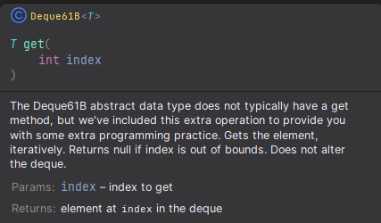
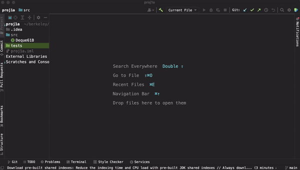

项目1A：LinkedListDeque61B
截止日期：2月5日星期一，太平洋时间晚上11:59
常见问题
每个作业顶部都会有一个常见问题链接。你也可以通过在URL末尾添加"/faq"来访问。项目1A的常见问题位于 这里 。
介绍
在项目0中，你实现了2048的游戏逻辑。在项目1A和1B（以及即将到来的一些实验中），你将实现自己的数据结构版本！在项目1中，你将首先构建自己的类列表结构：一种称为双端队列（Double Ended Queue，deque，发音为"deck"）的新抽象数据类型的实现。
在项目1A结束时，你将……
- 理解在数据结构中使用底层链表的方式。
- 获得使用测试和测试驱动开发来评估你自己的数据结构正确性的经验。
对于项目1A，我们将通过给出明确的指令来提供大量的脚手架支持。在项目1B中，你将做类似的任务，但脚手架支持会少得多。
本节假设你已经观看并完全消化了直到DLList讲座（第5讲）的所有课程内容。
对于这个项目，你必须独立完成！请仔细阅读 协作与作弊政策 ，了解这具体意味着什么。特别是，不要在网上寻找解决方案。
不言而喻，你在实现中不得使用任何内置的
java.util数据结构！整个重点就是构建你自己的版本！有几个地方你可以在测试之外使用特定的数据结构，我们会清楚地说明在哪里。
提交次数限制
在这个项目中，你最多有4个提交令牌可以提交到自动评分器，每个令牌的刷新周期为24小时。与之前的作业不同， 并非所有测试都会在本地提供 ，因此你需要自己编写测试来验证代码的正确性。更多详情请参见 编写测试 部分。
对于因不理解令牌限制政策而导致的问题，我们不会批准延期。 如果你有疑问，请提问！
代码风格
在这个项目中， 我们将强制执行代码风格 。你必须遵循 代码风格指南 ，否则你会在自动评分器上被扣分。
你可以也应该使用 CS 61B 插件在本地检查你的代码风格。 对于因未检查代码风格而导致的问题，我们不会取消提交次数限制。
我们不会对测试强制执行代码风格，所以你可以使用魔数！
获取框架文件
按照
作业工作流指南
中的说明获取框架代码并在 IntelliJ 中打开。对于这个项目，我们将在
proj1a
目录中工作。
你会看到你的仓库中出现了一个
proj1a
目录，其结构如下：
proj1a
├── src
│ └── Deque61B.java
└── tests
├── LinkedListDeque61BTest.java
└── PreconditionTest.java
如果你遇到某种错误，请停下来，要么通过仔细阅读
git 常见问题
来解决，要么在办公时间或 Ed 上寻求帮助。与使用 git 命令进行猜测和检查相比，你可能会为自己省去很多麻烦。如果你发现自己试图使用 Google 推荐的命令，比如
force push
，
不要这样做
。
不要使用 force push，即使你在 栈 Overflow 上找到的帖子说要这样做！
你也可以观看 Hug 教授的 演示视频 了解如何开始，如果你遇到一些 git 问题，可以观看这个 视频 。
Deque61B：抽象数据类型和API
双端队列与我们在课堂上讨论过的 SLList 和 AList 类非常相似。以下是 Java标准库 中的定义。
一种支持在两端插入和删除元素的线性集合。名称 deque 是"double ended queue"（双端队列）的缩写，通常发音为"deck"。大多数
Deque实现对其可能包含的元素数量没有固定限制，但此接口支持容量受限的双端队列以及没有固定大小限制的双端队列。
我们不需要 Java 的
Deque
中定义的所有方法，因此我们定义了自己的接口，可以在
src/Deque61B.java
中找到。
例如，
get
方法在一种称为
Javadoc注释
的内容中描述如下：
/** ...
* @param index index to get
* @return element at {@code index} in the deque
*/
T get(int index);
在这里，
@param
表示方法的参数，
@return
表示方法的返回值。
@code
标签用于将内容格式化为代码。
如果你将鼠标悬停在 IntelliJ 中的方法名称上，你会看到一个类似这样的弹出窗口，如果你想知道某个方法的作用，这会很有用：

首先打开
Deque61B.java文件并 阅读 其中的文档。我们 不会 在规范中重复接口文件中的信息——因此，你需要确保在完成项目时阅读它。
你不应该编辑
Deque61B.java
。
阅读其他方法的描述是你的责任。
说真的，不要跳过这一步。如果你跳过这一步，你会困惑 好几个小时 。请为自己节省时间和压力！
LinkedListDeque61B
作业理念
初学者常犯的一个错误是写大量代码，然后希望完成后一切都能正常工作。这会让程序员的生活变得非常困难。想象一下，实现了上面所有方法，提交到自动评分器，然后收到一条消息说"调用
get
返回了 9，期望值是 7"。你根本不知道问题是出在
get
方法本身，还是其他一些必要的方法出了问题。
为了帮助培养更好的编程习惯，在项目1A中，我们将一步步指导你完成开发过程。你不是必须严格遵循推荐的步骤，也就是说，如果你通过了自动评分器，你就能得到所有分数，但我们强烈建议你遵循本规范中概述的步骤。
为了获得预期的体验，请按顺序遵循这些步骤。如果你做了其他事情并向我们寻求帮助，我们会让你回到这些步骤。
创建文件
首先创建一个名为
LinkedListDeque61B
的文件。这个文件应该创建在
proj1a/src
目录中。要做到这一点，右键单击
src
目录，导航到"New -> Java 类"，然后给它命名为
LinkedListDeque61B
。
我们希望我们的
LinkedListDeque61B
能够容纳几种不同的类型。例如，
LinkedListDeque61B<String>
容纳
String
，
LinkedListDeque61B<Integer>
容纳
Integer
。要实现这一点，你应该编辑类的声明，使其变为：
public class LinkedListDeque61B<T>
回想一下讲座中的内容，我们使用
T
还是其他字符串（比如
LinkedListDeque61B<Glerp>
）实际上并不重要。但是，为了与其他 Java 代码保持一致，我们建议使用
<T>
。
我们还想告诉 Java，每个
LinkedListDeque61B
都是一个
Deque61B
，这样用户就可以编写类似
Deque61B<String> lld1 = new LinkedListDeque61B<>();
这样的代码。要实现这一点，请更改类的声明，使其变为：
public class LinkedListDeque61B<T> implements Deque61B<T>
然而，这会产生一个错误。为了让
LinkedListDeque61B
成为一个
Deque61B
，它需要实现所有的
Deque61B
方法。将鼠标悬停在红色波浪线上，当错误消息框弹出时，点击"implement methods"按钮。这将为你自动生成方法头。
下面的 GIF 演示了这些步骤：

最后，你应该创建一个空的构造函数。为此，将以下代码添加到你的文件中，暂时将构造函数留空。
public LinkedListDeque61B() {
}
注意：你也可以通过点击"Code"，然后点击"Generate"，再点击"Constructor"来生成构造函数，尽管我们更喜欢手动输入代码的方式。
现在你准备好开始了！
JUnit测试
LinkedListDeque61BTest
现在打开
LinkedListDeque61BTest.java
文件。你会看到每一行前面都有一个
//
。让我们移除除最后一行之外的所有
//
注释。为此，高亮显示文件中所有以
//
开头的行。然后点击顶部菜单栏中的"Code"，然后点击"Comment with Line Comment"。所有行现在都应该被取消注释。你也可以使用
Ctrl+/
（Windows / Linux）或
⌘ /
/
Cmd+/
（Mac）。
现在点击并运行所有测试。由于你还没有实现任何方法，你几乎会在所有测试中失败。
在你能通过这些测试之前，你需要做很多工作，所以我们现在先把测试放在一边，稍后再回来处理它们。
PreconditionTest
在这个测试文件中，我们提供了一些测试来检查你的
LinkedListDeque61B
文件，以检查你的代码结构是否正确。你不需要理解这些测试，但你应该能够运行它们。
编写和验证构造函数
本节假设你已经观看并完全消化了 包括
DLList讲座（第5讲）在内的所有课程内容。
"拓扑"是一种可用于表示链表的结构。正如讲座中讨论的，有很多选择，但对于这个项目，你 必须 实现一个带有哨兵节点的循环双向链表拓扑：
空列表由一个指向自身的哨兵节点表示。有一个名为
sentinel
的实例变量指向这个哨兵节点。
参见此幻灯片
。
正如讲座中提到的，虽然这最后一种方法一开始看起来最复杂，但它最终会带来最简单的实现。
实现
LinkedListDeque61B
的构造函数，使其与适当的拓扑相匹配。
在这个过程中，你需要创建一个
Node类并引入一个或多个实例变量。这可能需要你一些时间来完全理解。
你的节点应该是双向链接的，并且恰好具有双向链接节点所需的字段（实例变量）。此外，你应该只有一个节点类，并且这个节点类
必须
是
LinkedListDeque61B
内部的内部类或嵌套类。
你的
Node类的设计是一个 严格要求 。如果你的Node类不符合上面列出的规范（嵌套类，具有双向链接节点的字段），你将无法通过自动评分器。
完成后，在
addFirstTestBasic
的第一行设置一个断点。以调试模式运行测试，并使用单步跳过（
）功能。使用 Java 可视化工具验证你创建的对象是否与预期的拓扑相匹配。
任务 ：实现构造函数。你的
LinkedListDeque61B构造函数 必须 接受 0 个参数。实现一个节点类。（你可能还需要一些实例变量。）
如果
PreconditionTest失败，你的实现在某种程度上 不足 。测试应该会给你一个关于哪里出错的提示。一些常见的错误：
- 你可能使用了错误的拓扑。（如果你遇到
NullPointerException，很可能就是这种情况。）- Node 可能定义在单独的文件中。
- Node 可能使用了错误的类型来存储数据。请记住
Deque61B是 泛型 的。LinkedListDeque61B可能有一个接受额外参数的构造函数。- 对于双向链接节点，它的字段（实例变量）可能太少或太多。
- 它可能有非基本类型或非节点字段。
在你完成
toList之前，其他测试可能无法工作。
编写和验证
addFirst
和
addLast
addFirst
和
addLast
不得
使用循环或递归。单次添加操作必须花费"常数时间"，也就是说，无论双端队列有多大，添加一个元素应该花费大致相同的时间。这意味着你不能使用遍历双端队列所有/大多数元素的循环。
填写
addFirst
和
addLast
方法。然后，调试
addFirstAndAddLastTest
。这个测试不会通过，因为你还没有编写
toList
，但你可以使用调试器和可视化工具来验证你的代码是否正常工作。
任务 ：实现
addFirst和addLast，并使用addFirstAndAddLastTest和 Java 可视化工具验证它们是否正确。
在你完成下一节的
toList之前，测试将无法工作。
编写和验证
toList
你可能发现使用调试器和可视化工具来验证
addFirst
和
addLast
方法的正确性有点乏味和不愉快。还有一个问题是，一旦你修改了代码，这种手动验证就会失效。想象一下，你对
addLast
做了一些微小但不确定的修改。为了验证你没有破坏任何东西，你必须回去重新做整个过程。真讨厌。
（另外，我们有将近1500名学生！我们不可能这样做来给每个人的作业评分。）
我们真正想要的是一些自动化测试。但不幸的是，如果我们只实现了这两个方法，就没有简单的方法来验证
addFirst
和
addLast
的正确性。也就是说，目前没有办法遍历我们的列表并获取其值来验证它们是否正确。
这就是
toList
方法的用武之地。当被调用时，这个方法返回
Deque61B
的
List
表示。例如，如果
Deque61B
依次调用了
addLast(5)
、
addLast(9)
、
addLast(10)
，然后调用了
addFirst(3)
，那么
toList()
的结果应该是一个 List，前面是 3，然后是 5，然后是 9，然后是 10。如果在 Java 中打印，它会显示为
[3, 5, 9, 10]
。
编写
toList
方法。方法的第一行应该类似于
List<T> returnList = new ArrayList<>()
。
这是一个允许你使用 Java 数据结构的地方。
你可以使用 IntelliJ 的自动导入或复制这条语句来导入 ArrayList：
import java.util.ArrayList; // import the ArrayList class
要验证你的
toList
方法是否正常工作，你可以运行
LinkedListDeque61BTest
中的测试。如果你通过了所有测试，你就为继续完成项目奠定了坚实的基础。太棒了！如果没有，请使用调试器仔细调查你的
toList
方法出了什么问题。如果你真的卡住了，回去验证你的
addFirst
和
addLast
方法是否正常工作。
如果你使用
toList，后面的一些方法可能看起来很简单。 你不得在LinkedListDeque61B内部调用toList；有一个测试会检查这一点。
任务 ：实现
toList，并使用LinkedListDeque61BTest中的测试验证它是否正确。
测试部分
在项目0中，我们为你提供了一整套单元测试，你可以用来在本地测试你的代码。在这个项目中，你将被要求编写
你自己的
单元测试套件，提供类似的覆盖率。为了让你对这是如何工作的有一点了解，我们基本上会把你的测试文件（
LinkedListDeque61BTest.java
）用来"测试"我们的
LinkedListDeque61B
教职工解决方案。使用一些自动评分器的魔法，我们能够确定你的测试能够命中哪些边界情况，从而告诉你测试套件的"覆盖率"。因此，为了在这一部分获得满分，你应该尝试思考每个方法的所有边界情况！
我们的教职工解决方案也只有一个接受0个参数的构造函数，这意味着你的测试应该只使用接受0个参数的构造函数。
共享测试被视为 学术不端 和 作弊 。请不要这样做。这是为了让你培养测试技能。
编写测试
要编写测试，我们将使用 Google 的 Truth 断言库。我们使用这个库而不是 JUnit 断言，原因如下：
- 更好的列表失败消息。
- 更容易阅读和编写测试。
- 开箱即用的更大断言库。
我们经常使用 Arrange-Act-Assert（安排-执行-断言）模式来编写测试：
- 安排 测试用例，例如实例化数据结构或用元素填充它。
- 执行 你想要测试的行为。
- 断言 步骤（2）中操作的结果。
我们经常在单个测试方法中有多个"执行"和"断言"步骤，以减少样板代码（重复代码）的数量。
你应该在
LinkedListDeque61BTest.java
中编写你的测试。
注意 ：你在这个项目中编写的测试将被检查它们覆盖的不同"场景"。你需要覆盖足够多的场景，包括一些边界情况。
通过覆盖率检查器并不意味着你的测试是完美的 ！你可能仍然缺少一些边界情况，因为我们不要求100%的覆盖率，而且我们不可能测试每一个单独的情况。我们建议你编写自己的测试来检查失败情况下的代码，而不仅仅是依赖覆盖率检查器。
虽然覆盖率检查器可以检查你对双端队列 做了 什么，但它不会检查你对双端队列 断言了 什么。如果你发现自己在你认为已经覆盖的自动评分器测试中失败了，一个好的下一步是在你自己的测试中添加额外的断言。例子包括验证每次调用的结果，在每次调用之间检查整个双端队列，或者检查其他双端队列方法的结果。
Truth断言
Truth断言采用以下格式：
assertThat(actual).是EqualTo(expected);
To add a message to the assertion, we can instead use:
assertWithMessage("actual 是 not expected")
.that(actual)
.是EqualTo(expected);
我们可以使用除
是EqualTo
之外的方法，具体取决于
actual
的类型。
例如，如果
actual
是一个
List
，我们可以执行以下操作来检查其内容而不构造新的
List
：
assertThat(actualList)
.containsExactly(0, 1, 2, 3)
.inOrder();
If we had a
List
or other reference object, we could use:
assertThat(actualList)
.containsExactlyElementsIn(expected) // `expected` 是 a List
.inOrder();
Truth 有很多断言，包括
是Null
和
是NotNull
；以及用于
boolean
的
是True
和
是False
。IntelliJ 的自动完成通常会给出你可以使用哪些断言的建议。
如果你没有进行任何断言，即使你的实现不正确，你也会通过自己的测试！例如，以下的测试将通过，即使
addFirst什么也不做：@Test public void noAssertionTest() { Deque61B<String> lld = new LinkedListDeque61B<>(); lld.addFirst("front"); }You also must remember to use
.isTrue()or.isFalse()when asserting boolean statements. 例如, the following test will always pass, even if是Emptyalways returnsfalse!@Test public void 是EmptyTest() { Deque61B<String> lld = new LinkedListDeque61B<>(); assertThat(lld.是Empty()); }上述测试的最后一行应该是
assertThat(lld.isEmpty()).isTrue();。
示例测试
让我们分析一下提供的
addLastTestBasic
：
@Test
/** In th是 test, we use only 一 assertThat statement.
* Sometimes, the tedious work of adding the extra assertion statements 是n't worth it. */
public void addLastTestBasic() {
Deque61B<String> lld1 = new LinkedListDeque61B<>();
lld1.addLast("front"); // after this call we expect: ["front"]
lld1.addLast("middle"); // after this call we expect: ["front", "middle"]
lld1.addLast("back"); // after this call we expect: ["front", "middle", "back"]
assertThat(lld1.toList()).containsExactly("front", "middle", "back").inOrder();
}
-
@Test告诉 Java 这个方法是一个 测试 ，当我们运行测试时应该执行它。 -
安排
：我们构造一个新的
Deque61B，并使用addLast向其中添加3个元素。 -
执行
：我们对
Deque61B调用toList。这隐含地依赖于之前的addLast调用。 -
断言
：我们使用 Truth 断言来检查
toList是否按特定顺序包含特定元素。
其余方法
剩下的就是测试和实现所有剩余的方法。在这个项目的剩余部分，我们将在高层描述我们建议的步骤。我们 强烈建议 你按照给定的顺序遵循剩余的步骤。特别是， 在实现之前先编写测试 。这被称为"测试驱动开发"，有助于确保你在实现方法之前知道它们应该做什么。
是Empty
和
size
这两个方法必须花费 常数时间 。也就是说，任一方法完成执行所需的时间不应取决于双端队列中有多少元素。
为
是Empty
和
size
编写一个或多个测试。运行它们并验证它们失败。
你的测试应该验证不止一个有趣的情况
，例如检查空列表和非空列表，或者检查大小是否变化。
对于这些测试，你可以在
assertThat
语句上使用
是True
或
是False
方法。
你的测试可以从非常细粒度（例如
testIsEmpty
、
testSizeZero
、
testSizeOne
）到非常粗粒度（例如
testSizeAndIsEmpty
）。由你自己探索并找到你喜欢的粒度。
任务 ：为
是Empty和size方法 编写测试 ，并检查它们是否失败。然后，实现这些方法。
get
为
get
方法编写一个测试。确保测试
get
接收到无效参数的情况，例如当
Deque61B
只有1个元素时调用
get(28723)
，或者使用负索引。在这些情况下，
get
应该返回
null
。
get
必须使用迭代。
任务 ： 在你编写了测试并验证它们失败之后 ，实现
get。
getRecursive
由于我们正在使用链表，编写一个递归的 get 方法
getRecursive
会很有趣。
复制并粘贴你为
get
方法的测试，使它们除了调用
getRecursive
之外都相同。（虽然有一种方法可以避免复制和粘贴测试，但语法不值得介绍——在 Java 中传递函数有点麻烦。）
任务 ： 在你复制粘贴测试并验证它们失败之后 ，实现
getRecursive。
removeFirst
and
removeLast
最后，编写一些测试来测试
removeFirst
和
removeLast
的行为，并再次确保测试失败。
对于这些测试，你需要使用
toList
！
使用
addFirstAndAddLastTest
作为参考。
不要维护对已不在双端队列中的项的引用。你的程序在任何给定时间使用的内存量必须与项的数量成正比。例如，如果你向双端队列添加了10,000个项，然后移除了9,999个项，那么最终的内存使用量应该是一个包含1个项的双端队列，而不是10,000个。请记住，Java 垃圾收集器会在且仅在没有指向该对象的指针时为我们"删除"东西。
如果
Deque61B
为空，移除操作应返回
null
。
removeFirst
和
removeLast
不得
使用循环或递归。与
addFirst
和
addLast
一样，这些操作必须花费"常数时间"。有关这意味着什么的更多信息，请参阅编写
addFirst
和
addLast
的部分。
任务 ： 在你编写了测试并验证它们失败之后 ，实现
removeFirst和removeLast。
提交到自动评分器
一旦你编写并通过了本地测试，就尝试提交到自动评分器。你可能会也可能不会通过所有测试。
- 如果你在任何覆盖率测试中失败，这意味着你的本地测试没有覆盖某种情况。 这里 是你应该覆盖的测试用例列表。
- 如果你在任何时间测试中失败，这意味着你的实现不符合上述时间约束。
- 你将有每24小时4个令牌的限制。 对于因未能添加/提交/推送代码、运行风格检查等原因导致的问题，我们不会恢复令牌。
评分标准
这个项目与项目0类似，被分成了各个组件，每个组件你都必须 完全正确地 实现才能获得分数。
-
空列表 (5%)
：定义一个有效的
Node类并正确实现构造函数。 -
添加 (25%)
：正确实现
addFirst、addLast和toList。 -
是Empty、size(5%) ：在 add 方法正常工作的情况下，正确实现是Empty和size。 -
get(10%) ：正确实现get。 -
getRecursive(5%) ：正确实现getRecursive。 -
移除 (30%)
：正确实现
removeFirst和removeLast。 - 集成 (10%) ：通过随机调用所有方法的集成测试套件。
此外，还有一个 测试覆盖率 (10%) 的部分。我们将针对教职工解决方案运行你的测试，并检查有多少场景和边界情况被测试。你可以获得这部分的部分分数。你可以在 这里 找到场景列表。